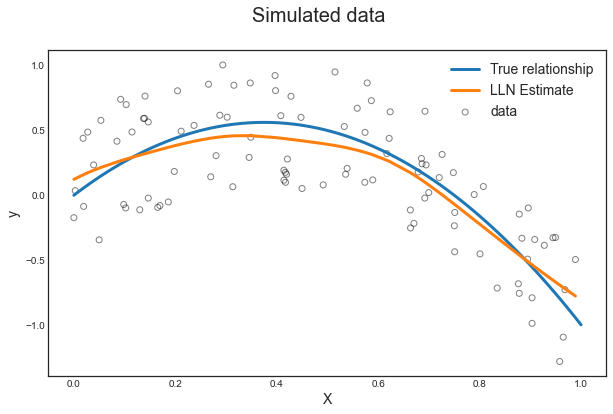

Non-Parametric Regression
Last updated on Mar 9, 2022
# Setup
%matplotlib inline
from utils.lecture03 import *
Dataset
For this session, we are mostly going to work with the wage dataset.
df = pd.read_csv('data/Wage.csv', index_col=0)
df.head(3)
| year | age | maritl | race | education | region | jobclass | health | health_ins | logwage | wage | |
|---|---|---|---|---|---|---|---|---|---|---|---|
| 231655 | 2006 | 18 | 1. Never Married | 1. White | 1. < HS Grad | 2. Middle Atlantic | 1. Industrial | 1. <=Good | 2. No | 4.318063 | 75.043154 |
| 86582 | 2004 | 24 | 1. Never Married | 1. White | 4. College Grad | 2. Middle Atlantic | 2. Information | 2. >=Very Good | 2. No | 4.255273 | 70.476020 |
| 161300 | 2003 | 45 | 2. Married | 1. White | 3. Some College | 2. Middle Atlantic | 1. Industrial | 1. <=Good | 1. Yes | 4.875061 | 130.982177 |
This dataset contains information on wages and individual characteristics.
Our main objective is going to be to explain wages using the observables contained in the dataset.
Polynomial Regression and Step Functions
As we have seen in the first lecture, the most common way to introduce linearities is to replace the standard linear model
$$ y_i = \beta_0 + \beta_1 x_i + \varepsilon_i $$
with a polynomial function
$$ y_i = \beta_0 + \beta_1 x_i + \beta_2 x_i^2 + \beta_2 x_i^3 + … + \varepsilon_i $$
Explore the Data
Suppose we want to investigate the relationship between wage and age. Let’s first plot the two variables.
# Scatterplot of the data
df.plot.scatter('age','wage',color='w', edgecolors='k', alpha=0.3);
Polynomials of different degrees
The relationship is highly complex and non-linear. Let’s expand our linear regression polynomials of different degrees: 1 to 5.
X_poly1 = PolynomialFeatures(1).fit_transform(df.age.values.reshape(-1,1))
X_poly2 = PolynomialFeatures(2).fit_transform(df.age.values.reshape(-1,1))
X_poly3 = PolynomialFeatures(3).fit_transform(df.age.values.reshape(-1,1))
X_poly4 = PolynomialFeatures(4).fit_transform(df.age.values.reshape(-1,1))
X_poly5 = PolynomialFeatures(5).fit_transform(df.age.values.reshape(-1,1))
Variables
Our dependent varaible is going to be a dummy for income above 250.000 USD.
# Get X and y
X = df.age
y = df.wage
y01 = (df.wage > 250).map({False:0, True:1}).values
Polynomia Regression
If we run a linear regression on a 4-degree polinomial expansion of age, this is what it looks like`:
# Fit ols on 4th degree polynomial
fit = sm.OLS(y, X_poly4).fit()
fit.summary().tables[1]
| coef | std err | t | P>|t| | [0.025 | 0.975] | |
|---|---|---|---|---|---|---|
| const | -184.1542 | 60.040 | -3.067 | 0.002 | -301.879 | -66.430 |
| x1 | 21.2455 | 5.887 | 3.609 | 0.000 | 9.703 | 32.788 |
| x2 | -0.5639 | 0.206 | -2.736 | 0.006 | -0.968 | -0.160 |
| x3 | 0.0068 | 0.003 | 2.221 | 0.026 | 0.001 | 0.013 |
| x4 | -3.204e-05 | 1.64e-05 | -1.952 | 0.051 | -6.42e-05 | 1.45e-07 |
Measures of Fit
In this case, the single coefficients are not of particular interest. We are mostly interested in the best capturing the relationship between age and wage. How can we pick among thedifferent polynomials?
We compare different polynomial degrees. For each regression, we are going to look at a series of metrics:
- absolute residuals
- sum of squared residuals
- the difference in SSR w.r (SSR).t the 0-degree case
- F statistic
# Run regressions
fit_1 = sm.OLS(y, X_poly1).fit()
fit_2 = sm.OLS(y, X_poly2).fit()
fit_3 = sm.OLS(y, X_poly3).fit()
fit_4 = sm.OLS(y, X_poly4).fit()
fit_5 = sm.OLS(y, X_poly5).fit()
# Compare fit
sm.stats.anova_lm(fit_1, fit_2, fit_3, fit_4, fit_5, typ=1)
| df_resid | ssr | df_diff | ss_diff | F | Pr(>F) | |
|---|---|---|---|---|---|---|
| 0 | 2998.0 | 5.022216e+06 | 0.0 | NaN | NaN | NaN |
| 1 | 2997.0 | 4.793430e+06 | 1.0 | 228786.010128 | 143.593107 | 2.363850e-32 |
| 2 | 2996.0 | 4.777674e+06 | 1.0 | 15755.693664 | 9.888756 | 1.679202e-03 |
| 3 | 2995.0 | 4.771604e+06 | 1.0 | 6070.152124 | 3.809813 | 5.104620e-02 |
| 4 | 2994.0 | 4.770322e+06 | 1.0 | 1282.563017 | 0.804976 | 3.696820e-01 |
The polynomial degree 4 seems best.
# Set polynomial X to 4th degree
X_poly = X_poly4
Binary Dependent Variable
Since we have a binary dependent variable, it would be best to account for it in our regression framework. One way to do so, is to run a logistic regression.
How to interpret a Logistic Regression?
$$ y = \mathbb I \ \Big( \beta_0 + \beta_1 x_i + \beta_2 x_i^2 + \beta_2 x_i^3 + … + \varepsilon_i \Big) $$
where $\mathbb I(\cdot)$ is an indicator function and now $\varepsilon_i$ is the error term.
Binomial Link Functions
Depending on the assumed distribution of the error term, we get different results. I list below the error types supported by the Binomial family.
# List link functions for the Binomial family
sm.families.family.Binomial.links
[statsmodels.genmod.families.links.logit,
statsmodels.genmod.families.links.probit,
statsmodels.genmod.families.links.cauchy,
statsmodels.genmod.families.links.log,
statsmodels.genmod.families.links.cloglog,
statsmodels.genmod.families.links.identity]
Logit Link Function
We are going to pick the logit link, i.e. we are going to assume that the error term is Type 1 Extreme Value (or Gumbel) distributed. It instead we take the usual standard normal distribution assumption for $\varepsilon_i$, we get probit regression.
# Pick the logit link for the Binomial family
logit_link = sm.families.Binomial(sm.genmod.families.links.logit())
Given the error distribution, we can write the probability that $y=1$ as
$$ \Pr(y=1) = \frac{e^{ \beta_0 + \beta_1 x_i + \beta_2 x_i^2 + \beta_2 x_i^3 + … + \varepsilon_i }}{1 + e^{ \beta_0 + \beta_1 x_i + \beta_2 x_i^2 + \beta_2 x_i^3 + … + \varepsilon_i } } $$
Logistic Regression
We now estimate the regression and plot the estimated relationship between age and wage.
# Run logistic regression
logit_poly = sm.GLM(y01, X_poly, family=logit_link).fit()
logit_poly.summary().tables[1]
| coef | std err | z | P>|z| | [0.025 | 0.975] | |
|---|---|---|---|---|---|---|
| const | -109.5530 | 47.655 | -2.299 | 0.022 | -202.956 | -16.150 |
| x1 | 8.9950 | 4.187 | 2.148 | 0.032 | 0.789 | 17.201 |
| x2 | -0.2816 | 0.135 | -2.081 | 0.037 | -0.547 | -0.016 |
| x3 | 0.0039 | 0.002 | 2.022 | 0.043 | 0.000 | 0.008 |
| x4 | -1.949e-05 | 9.91e-06 | -1.966 | 0.049 | -3.89e-05 | -6.41e-08 |
Linear Model Comparison
What is the difference with the linear model?
# Run OLS regression with binary outcome
ols_poly = sm.OLS(y01, X_poly).fit()
ols_poly.summary().tables[1]
| coef | std err | t | P>|t| | [0.025 | 0.975] | |
|---|---|---|---|---|---|---|
| const | -0.1126 | 0.240 | -0.468 | 0.640 | -0.584 | 0.359 |
| x1 | 0.0086 | 0.024 | 0.363 | 0.717 | -0.038 | 0.055 |
| x2 | -0.0002 | 0.001 | -0.270 | 0.787 | -0.002 | 0.001 |
| x3 | 3.194e-06 | 1.23e-05 | 0.260 | 0.795 | -2.09e-05 | 2.73e-05 |
| x4 | -1.939e-08 | 6.57e-08 | -0.295 | 0.768 | -1.48e-07 | 1.09e-07 |
The magnitude of the coefficients is different, but the signs are the same.
Plot data and predictions
Let’s plot the estimated curves against the data distribution.
# Generate predictions
x_grid = np.arange(df.age.min(), df.age.max()).reshape(-1,1)
X_poly_test = PolynomialFeatures(4).fit_transform(x_grid)
y_hat1 = sm.OLS(y, X_poly).fit().predict(X_poly_test)
y01_hat1 = logit_poly.predict(X_poly_test)
plot_predictions(X, y, x_grid, y01, y_hat1, y01_hat1, 'Figure 7.1: Degree-4 Polynomial')
Which is remindful of
Using polynomial functions of the features as predictors in a linear model imposes a global structure on the non-linear function of age. We can instead use step functions in order to avoid imposing such a global structure.
For example, we could break the range of age into bins, and fit a different constant in each bin.
Step Functions
Building a step function means first picking $K$ cutpoints $c_1 , c_2 , . . . , c_K$ in the range of age,
and then construct $K + 1$ new variables
$$
C_0(age) = \mathbb I ( age < c_1) \
C_1(age) = \mathbb I ( c_1 < age < c_2) \
C_2(age) = \mathbb I ( c_2 < age < c_3) \
… \
C_{K-1}(age) = \mathbb I ( c_{K-1} < age < c_K) \
C_K(age) = \mathbb I ( c_K < age) \
$$
where $\mathbb I(\cdot)$ is the indicator function.
Binning
First, we generate the cuts.
# Generate cuts for the variable age
df_cut, bins = pd.cut(df.age, 4, retbins=True, right=True)
df_cut.value_counts(sort=False)
type(df_cut)
pandas.core.series.Series
Let’s generate a DataFrame out of this series.
# Generate bins for "age" from the cuts
df_steps = pd.concat([df.age, df_cut, df.wage], keys=['age','age_cuts','wage'], axis=1)
df_steps.head(5)
| age | age_cuts | wage | |
|---|---|---|---|
| 231655 | 18 | (17.938, 33.5] | 75.043154 |
| 86582 | 24 | (17.938, 33.5] | 70.476020 |
| 161300 | 45 | (33.5, 49.0] | 130.982177 |
| 155159 | 43 | (33.5, 49.0] | 154.685293 |
| 11443 | 50 | (49.0, 64.5] | 75.043154 |
Dummy Variables
Now we can generate different dummy variables out of each bin.
# Create dummy variables for the age groups
df_steps_dummies = pd.get_dummies(df_steps['age_cuts'])
# Statsmodels requires explicit adding of a constant (intercept)
df_steps_dummies = sm.add_constant(df_steps_dummies)
df_steps_dummies.head(5)
| const | (17.938, 33.5] | (33.5, 49.0] | (49.0, 64.5] | (64.5, 80.0] | |
|---|---|---|---|---|---|
| 231655 | 1.0 | 1 | 0 | 0 | 0 |
| 86582 | 1.0 | 1 | 0 | 0 | 0 |
| 161300 | 1.0 | 0 | 1 | 0 | 0 |
| 155159 | 1.0 | 0 | 1 | 0 | 0 |
| 11443 | 1.0 | 0 | 0 | 1 | 0 |
Stepwise Regression
We are now ready to run our regression
# Generate our new X variable
X_step = df_steps_dummies.drop(df_steps_dummies.columns[1], axis=1)
# OLS Regression on step functions
ols_step = sm.OLS(y, X_step).fit()
ols_step.summary().tables[1]
| coef | std err | t | P>|t| | [0.025 | 0.975] | |
|---|---|---|---|---|---|---|
| const | 94.1584 | 1.476 | 63.790 | 0.000 | 91.264 | 97.053 |
| (33.5, 49.0] | 24.0535 | 1.829 | 13.148 | 0.000 | 20.466 | 27.641 |
| (49.0, 64.5] | 23.6646 | 2.068 | 11.443 | 0.000 | 19.610 | 27.719 |
| (64.5, 80.0] | 7.6406 | 4.987 | 1.532 | 0.126 | -2.139 | 17.420 |
From the regression outcome we can see that most bin coefficients are significant, except for the last one.
# Put the test data in the same bins as the training data.
bin_mapping = np.digitize(x_grid.ravel(), bins)
bin_mapping
array([1, 1, 1, 1, 1, 1, 1, 1, 1, 1, 1, 1, 1, 1, 1, 1, 2, 2, 2, 2, 2, 2,
2, 2, 2, 2, 2, 2, 2, 2, 2, 3, 3, 3, 3, 3, 3, 3, 3, 3, 3, 3, 3, 3,
3, 3, 3, 4, 4, 4, 4, 4, 4, 4, 4, 4, 4, 4, 4, 4, 4, 4])
# Get dummies, drop first dummy category, add constant
X_step_test = sm.add_constant(pd.get_dummies(bin_mapping).drop(1, axis=1))
X_step_test.head()
| const | 2 | 3 | 4 | |
|---|---|---|---|---|
| 0 | 1.0 | 0 | 0 | 0 |
| 1 | 1.0 | 0 | 0 | 0 |
| 2 | 1.0 | 0 | 0 | 0 |
| 3 | 1.0 | 0 | 0 | 0 |
| 4 | 1.0 | 0 | 0 | 0 |
# Step prediction
y_hat2 = ols_step.predict(X_step_test)
Logistic Step Regression
We are going again to run a logistic regression, given that our outcome is binary.
# Logistic regression on step functions
logit_step = sm.GLM(y01, X_step, family=logit_link).fit()
y01_hat2 = logit_step.predict(X_step_test)
logit_step.summary().tables[1]
| coef | std err | z | P>|z| | [0.025 | 0.975] | |
|---|---|---|---|---|---|---|
| const | -5.0039 | 0.449 | -11.152 | 0.000 | -5.883 | -4.124 |
| (33.5, 49.0] | 1.5998 | 0.474 | 3.378 | 0.001 | 0.672 | 2.528 |
| (49.0, 64.5] | 1.7147 | 0.488 | 3.512 | 0.000 | 0.758 | 2.672 |
| (64.5, 80.0] | 0.7413 | 1.102 | 0.672 | 0.501 | -1.420 | 2.902 |
Plotting
How does the predicted function looks like?
plot_predictions(X, y, x_grid, y01, y_hat2, y01_hat2, 'Figure 7.2: Piecewise Constant')
Regression Splines
Spline regression, or piece-wise polynomial regression, involves fitting separate low-degree polynomials over different regions of $X$. The idea is to have one regression specification but with different coefficients in different parts of the $X$ range. The points where the coefficients change are called knots.
For example, we could have a third degree polynomial and splitting the sample in two.
$$ y_{i}=\left{\begin{array}{ll} \beta_{01}+\beta_{11} x_{i}+\beta_{21} x_{i}^{2}+\beta_{31} x_{i}^{3}+\epsilon_{i} & \text { if } x_{i}<c \ \beta_{02}+\beta_{12} x_{i}+\beta_{22} x_{i}^{2}+\beta_{32} x_{i}^{3}+\epsilon_{i} & \text { if } x_{i} \geq c \end{array}\right. $$
We have now two sets of coefficients, one for each subsample.
Generally, using more knots leads to a more flexible piecewise polynomial. Also increasing the degree of the polynomial increases the degree of flexibility.
Example
We are now going to plot 4 different examples for the age wage relationship:
- Discontinuous piecewise cubic
- Continuous piecewise cubic
- Quadratic (continuous)
- Continuous piecewise linear
# Cut dataset
df_short = df.iloc[:80,:]
X_short = df_short.age
y_short = df_short.wage
x_grid_short = np.arange(df_short.age.min(), df_short.age.max()+1).reshape(-1,1)
# 1. Discontinuous piecewise cubic
spline1 = "bs(x, knots=(50,50,50,50), degree=3, include_intercept=False)"
# 2. Continuous piecewise cubic
spline2 = "bs(x, knots=(50,50,50), degree=3, include_intercept=False)"
# 3. Quadratic (continuous)
spline3 = "bs(x, knots=(%s,%s), degree=2, include_intercept=False)" % (min(df.age), min(df.age))
# 4. Continuous piecewise linear
spline4 = "bs(x, knots=(%s,50), degree=1, include_intercept=False)" % min(df.age)
Generate Predictions
# Generate spline predictions
def fit_predict_spline(spline, X, y, x_grid):
transformed_x = dmatrix(spline, {"x": X}, return_type='dataframe')
fit = sm.GLM(y, transformed_x).fit()
y_hat = fit.predict(dmatrix(spline, {"x": x_grid}, return_type='dataframe'))
return y_hat
y_hats = [fit_predict_spline(s, X_short, y_short, x_grid_short) for s in [spline1, spline2, spline3, spline4]]
Plotting
plot_splines(df_short, x_grid_short, y_hats)
Comment
The first example makes us think on why would we want out function to be discontinuous. Unless we expect a sudden wage jump at a certain age, we would like the function to be continuous. However, if for example we split age around the retirement age, we might expect a discontinuity.
The second example (top right) makes us think on why would we want out function not to be differentiable. Unless we have some specific mechanism in mind, ususally there is a trade-off between making the function non-differentiable or increasing the degree of the polynomial, as the last two examples show us. We get a similar fit with a quadratic fit or a discontinuous linear fit. The main difference is that in the second case we are picking the discontinuity point by hand instead of letting the data choose how to change the slope of the curve.
The Spline Basis Representation
How can we fit a piecewise degree-d polynomial under the constraint that it (and possibly its first d − 1 derivatives) be continuous?
The most direct way to represent a cubic spline is to start off with a basis for a cubic polynomial—namely, x,x2,x3—and then add one truncated power basis function per knot. A truncated power basis function is defined as
$$ h(x, c)=(x-c)_{+}^{3} = \Bigg{\begin{array}{cl} (x-c)^{3} & \text { if } x>c \ 0 & \text { otherwise } \end{array} $$
One can show that adding a term of the form $\beta_4 h(x, c)$ to the model for a cubic polynomial will lead to a discontinuity in only the third derivative at $c$; the function will remain continuous, with continuous first and second derivatives, at each of the knots.
Cubic Splines
One way to specify the spline is using nodes and degrees of freedom.
# Specifying 3 knots and 3 degrees of freedom
spline5 = "bs(x, knots=(25,40,60), degree=3, include_intercept=False)"
pred5 = fit_predict_spline(spline5, X, y, x_grid)
No Knots
When we fit a spline, where should we place the knots?
The regression spline is most flexible in regions that contain a lot of knots, because in those regions the polynomial coefficients can change rapidly. Hence, one option is to place more knots in places where we feel the function might vary most rapidly, and to place fewer knots where it seems more stable. While this option can work well, in practice it is common to place knots in a uniform fashion. One way to do this is to specify the desired degrees of freedom, and then have the software automatically place the corresponding number of knots at uniform quantiles of the data.
# Specifying degree 3 and 6 degrees of freedom
spline6 = "bs(x, df=6, degree=3, include_intercept=False)"
pred6 = fit_predict_spline(spline6, X, y, x_grid)
Natural Splines
A natural spline is a regression spline with additional boundary constraints: the function is required to be linear at the boundary (in the region where X is smaller than the smallest knot, or larger than the largest knot). This addi- tional constraint means that natural splines generally produce more stable estimates at the boundaries.
# Natural spline with 4 degrees of freedom
spline7 = "cr(x, df=4)"
pred7 = fit_predict_spline(spline7, X, y, x_grid)
Comparison
# Compare predictons
preds = [pred5, pred6, pred7]
labels = ['degree 3, knots 3', 'degree 3, degrees of freedom 3', 'natural, degrees of freedom 4']
compare_predictions(X, y, x_grid, preds, labels)
Comparison to Polynomial Regression
Regression splines often give superior results to polynomial regression. This is because unlike polynomials, which must use a high degree to produce flexible fits, splines introduce flexibility by increasing the number of knots but keeping the degree fixed.
We are now fitting a polynomial of degree 15 and a spline with 15 degrees of freedom.
# Polynomial of degree 15
X_poly15 = PolynomialFeatures(15).fit_transform(df.age.values.reshape(-1,1))
ols_poly_15 = sm.OLS(y, X_poly15).fit()
pred8 = ols_poly_15.predict(PolynomialFeatures(15).fit_transform(x_grid))
# Spline with 15 degrees of freedon
spline9 = "bs(x, df=15, degree=3, include_intercept=False)"
pred9 = fit_predict_spline(spline9, X, y, x_grid)
Plotting
# Compare predictons
preds = [pred8, pred9]
labels = ['Polynomial', 'Spline']
compare_predictions(X, y, x_grid, preds, labels)
As we can see, despite the two regressions having the same degrees of freedom, the polynomial fit is much more volatile. We can compare them along some dimensions.
Local Regression
So far we have looked at so-called “global methods”: methods that try to fit a unique function specification over the whole data. The function specification can be complex, as in the case of splines, but can be expressed globally.
Local regression is a different approach for fitting flexible non-linear functions, which involves computing the fit at a target point $x_0$ using only the nearby training observations.
Details
How does local regression work?
Ingredients: $X$, $y$.
How to you output a prediction $\hat y_i$ at a new point $x_i$?
- Take a number of points in $X$ close to $x_i$: $X_{\text{close-to-i}}$
- Assign a weight to each of there points
- Fit a weigthed least squares regression of $X_{\text{close-to-i}}$ on $y_{\text{close-to-i}}$
- Use the estimated coefficients $\hat \beta$ to predict $\hat y_i = \hat \beta_0 + \hat \beta_1 x_i$
Generate Data
# Set seed
np.random.seed(1)
# Generate data
X_sim = np.sort(np.random.uniform(0,1,100))
e = np.random.uniform(-.5,.5,100)
y_sim = -4*X_sim**2 + 3*X_sim + e
# True Generating process without noise
X_grid = np.linspace(0,1,100)
y_grid = -4*X_grid**2 + 3*X_grid
Plotting
Let’s visualize the simulated data and the curve without noise.
plot_simulated_data(X_sim, y_sim, X_grid, y_grid);
Fit LL Regression
Now we fit a local linear regression.
# Settings
spec = 'll'
bandwidth = 0.1
kernel = 'gaussian'
# Locally linear regression
local_reg = KernelReg(y_sim, X_sim.reshape(-1,1),
var_type='c',
reg_type=spec,
bw=[bandwidth])
y_hat = KernelReg.fit(local_reg)
What do the parameters mean?
var_type: dependent variable type (ci.e. continuous)reg_type: local regression specification (lli.e. locally linear)bw: bandwidth length (0.1)ckertype: kernel type (gaussian)
Prediction
What does the prediction looks like?
fig, ax = plot_simulated_data(X_sim, y_sim, X_grid, y_grid);
make_figure_7_9a(fig, ax, X_sim, y_hat);

Details
How exactly was the prediction generated? It was generated pointwise. We are now going to look at the prediction at one particular point: $x_i=0.5$.
We proceed as follows:
- We select the focal point: $x_i=0.5$
- We select observations close to $\ x_i$, i.e. $x_{\text{close to i}} = { x \in X : |x_i - x| < 0.1 } \ $ and $ \ y_{\text{close to i}} = { y \in Y : |x_i - x| < 0.1 }$
- We apply gaussian weights
- We run a weighted linear regression of $y_{\text{close to i}}$ on $x_{\text{close to i}}$
# Get local X and y
x_i = 0.5
close_to_i = (x_i-bandwidth < X_sim) & (X_sim < x_i+bandwidth)
X_tilde = X_sim[close_to_i]
y_tilde = y_sim[close_to_i]
# Get local estimates
local_estimate = KernelReg.fit(local_reg, data_predict=[x_i])
y_i_hat = local_estimate[0]
beta_i_hat = local_estimate[1]
alpha_i_hat = y_i_hat - beta_i_hat*x_i
print('Estimates: alpha=%1.4f, beta=%1.4f' % (alpha_i_hat, beta_i_hat))
Estimates: alpha=0.7006, beta=-0.6141
Visualization
Now we can use the locally estimated coefficients to predict the value of $\hat y_i(x_i)$ for $x_i = 0.5$.
# Build local predictions
close_to_i_grid = (x_i-bandwidth < X_grid) & (X_grid < x_i+bandwidth)
X_grid_tilde = X_grid[close_to_i_grid].reshape(-1,1)
y_grid_tilde = alpha_i_hat + X_grid_tilde*beta_i_hat
fig, ax = plot_simulated_data(X_sim, y_sim, X_grid, y_grid);
make_figure_7_9a(fig, ax, X_sim, y_hat);
make_figure_7_9b(fig, ax, X_tilde, y_tilde, X_grid_tilde, y_grid_tilde, x_i, y_i_hat)
Zooming in
We can zoom in and look only at the “close to i” sample.
sns.regplot(X_tilde, y_tilde);
Why is the line upward sloped? We forgot the gaussian weights.
# Weights
w = norm.pdf((X_sim-x_i)/bandwidth)
# Estimate LWS
mod_wls = sm.WLS(y_sim, sm.add_constant(X_sim), weights=w)
results = mod_wls.fit()
print('Estimates: alpha=%1.4f, beta=%1.4f' % tuple(results.params))
Estimates: alpha=0.7006, beta=-0.6141
We indeed got the same estimates as before. Note two things:
- the badwidth defines the scale parameter of the gaussian weights
- our locally linear regression is acqually global
Plotting
make_figure_7_9d(X_sim, y_sim, w, results, X_grid, x_i, y_i_hat)

Now the slope is indeed negative, as in the locally linear regression.
Generalized Additive Models
Generalized additive models (GAMs) provide a general framework for extending a standard linear model by allowing non-linear functions of each of the variables, while maintaining additivity.
GAM for Regression Problems
Imagine to extend the general regression framework to some separabily additive model of the form
$$ y_i = \beta_0 + \sum_{k=1}^K \beta_k f_k(x_{ik}) + \varepsilon_i $$
It is called an additive model because we calculate a separate $f_k$ for each $X_k$, and then add together all of their contributions.
Consider for example the following model
$$ \text{wage} = \beta_0 + f_1(\text{year}) + f_2(\text{age}) + f_3(\text{education}) + \varepsilon $$
Example
We are going to use the following functions:
- $f_1$: natural spline with 8 degrees of freedom
- $f_2$: natural spline with 10 degrees of freedom
- $f_3$: step function
# Set X and y
df['education_'] = LabelEncoder().fit_transform(df["education"])
X = df[['year','age','education_']].to_numpy()
y = df[['wage']].to_numpy()
## model
linear_gam = LinearGAM(s(0, n_splines=8) + s(1, n_splines=10) + f(2))
linear_gam.gridsearch(X, y);
100% (11 of 11) |########################| Elapsed Time: 0:00:00 Time: 0:00:00
Plotting
plot_gam(linear_gam)
Pros and Cons
Before we move on, let us summarize the advantages of a GAM.
- GAMs allow us to fit a non-linear $f_k$ to each $X_k$, so that we can automatically model non-linear relationships that standard linear regression will miss
- The non-linear fits can potentially make more accurate predictions
- Because the model is additive, we can still examine the effect of each $X_k$ on $Y$ separately
- The smoothness of the function $f_k$ for the variable $X_k$ can be summarized via degrees of freedom.
The main limitation of GAMs is that the model is restricted to be additive. With many variables, important interactions can be missed. However, as with linear regression, we can manually add interaction terms to the GAM model by including additional predictors of the form $X_j \times X_k$.
GAMs for Classification Problems
We can use GAMs also with a binary dependent variable.
# Binary dependent variable
y_binary = (y>250)
## Logit link function
logit_gam = LogisticGAM(s(0, n_splines=8) + s(1, n_splines=10) + f(2), fit_intercept=True)
logit_gam.gridsearch(X, y_binary);
100% (11 of 11) |########################| Elapsed Time: 0:00:00 Time: 0:00:00
Plotting
plot_gam(logit_gam)
The results are qualitatively similar to the non-binary case.